9. Punishment values and BLPs¶
The first step is to construct punishment values over each partition element of the state space. This will turn out to be amenable to separable bilinear programming formulations.
Punishment payoffs for the large player  are constructed as follows.
are constructed as follows.
For each
 , define a correspondence 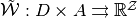 by
, define a correspondence 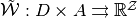 by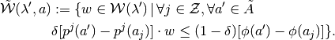
Note
Note
 encodes two requirements:
encodes two requirements:- Continuation values
 must be consistent with the set
must be consistent with the set  where itself enforces the action-continuation-state profile pair 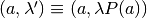; and
where itself enforces the action-continuation-state profile pair 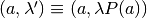; and - individually, the action-and-promised-value pair 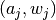 are optimal (i.e. “incentive compatible”).
- Continuation values
Next, construct government punishment vectors
- 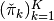, and
- 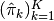
- by letting
(1)
![\pi(\lambda):=\max_{b\in B} \min_{a,\lambda',w}&[(1-\delta)\lambda\cdot v(a,b)+\delta \lambda'\cdot w],\\
\text{s.t.}\,\,& \lambda'=\lambda P(a),\\
& -\lambda b^T \geq 0,\\
& w\in \tilde{{\mathcal{W}}}(\lambda',a),](_images/math/9d17c1e20d41c6678daaa712c3770fef48bbbc7d.png)
Then define:
 and 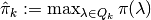.
and 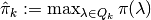.
Note
- If 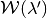 is defined as a convex polytope, then 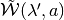 is also a convex polytope.
- Given 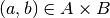, the minimization program (1) is a mild nonlinear programming problem–i.e. a separable bilinear programming formulation–of the following generic form
(2)
- Moreover, 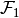 and
 are disjoint convex and bounded polytopes.
are disjoint convex and bounded polytopes.
Existence of Optimum
If  and
and  are bounded then there exists an optimal solution of (2),
are bounded then there exists an optimal solution of (2),  , such that
, such that  and 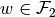.
and 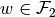.
Assume that we are solving the minimization problem in (2). We employ a well-known deterministic global optimization algorithm known as branch-and-bound (BNB). First, a relaxation of the bilinear program is solved. Typically, this is done by solving inexpensive LPs. [CM2009] The solution of the relaxed problem yields a lower bound on the globally optimal solution which is a convex lower envelope. The relaxation is then iteratively refined, by refining the domain (feasible sets) and successively eliminating dominated local optima. (This is also a common method in solving integer linear programs.) An upper bound estimate of the optima can be found by using local nonlinear solvers (e.g. SNOPT and IPOPT) over each branch. Thus we have successively improved branching partitions of the domain (i.e. branching) and lower- and upper-bounding estimates (i.e. bounding) of the  -global optimum.
-global optimum.
Note
The BNB algorithm we use follows [McC1976] and is implemented through the Bilinear Matrix Inequality BNB interface (BMIBNB) available in Stefan Lofberg’s YALMIP. To solve the local lower-bounding LPs, we use the GNU GLPK open-source optimizer and to solve the upper-bounding nonlinear programs, we use either SNOPT or IPOPT.
9.1. Implementing punishment values¶
The following pseudocode implements the punishment calculations for the outer-approximation scheme:
Pseudocode
Input: 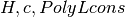
For each 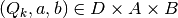:
Markov map 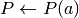
Simplex
Get
}
- Uses: xTriIndex from Simplex_IntersectPmap
For each 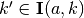:
- Get linear inequality representations of
as
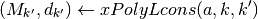
- Get current payoff profile 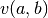
- Solve separable BLP
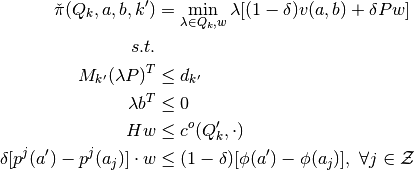
Get
.

- Get
 .
.
Note
The separable constraint sets and
for  and , respectively,
are given by constraints in the BLP. These constraint say the following.
and , respectively,
are given by constraints in the BLP. These constraint say the following.: the first two constraints require
 to be such that
to be such that- for each
 and
and  , the resulting continuation state
, the resulting continuation state  ; and
; and - given a fixed policy
 , the choice over
renders feasible according the the government budget
constraint;
, the choice over
renders feasible according the the government budget
constraint;
- for each
- is given by the requirements that be
- consistent with respect to the step correspondence slice
 which has constant levels over the partition
element
which has constant levels over the partition
element  ; and
; and - such that is incentive compatible for all small
agents.
- consistent with respect to the step correspondence slice
Constructing the punishment values 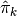 for the inner-approximation scheme is similar to what we did above in detail for
 . The only differences are
. The only differences are
in the second last step of the pseudocode above, replace that line with:
Of course we should also re-label all the 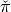 notation for the punishment value function with 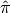; and
maximize over

Relevant functions 
-
Punish_Outer(self)¶ Returns:
pival :
- A
 numeric array containing elements
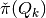 where
numeric array containing elements
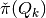 where  .
.
- A
See also
PunishK
-
Punish_Inner(self)¶ Returns:
pival :
- A numeric array containing elements
 where .
where .
- A
See also
PunishK
| [CM2009] | Carpara, Alberto and Michele Monaci. “Bidimensional packing by bilinear programming”. Mathematical Programming Series A, 118, 75–108. |
| [HPT2000] | Horst R, P. Pardalos and N. Thoai (2000): Introduction to global optimization. 2nd Edition, Boston: Springer, 2000. |
| [HT1996] | Horst R, Hoang Tuy (1996): Global Optimization. 3rd Edition, New York: Springer. |
| [Man1995] | Mangasarian, Olvi L. (1995): “The linear complementarity problem as a separable bilinear program”. Journal of Global Optimization, 12, 1–7. |